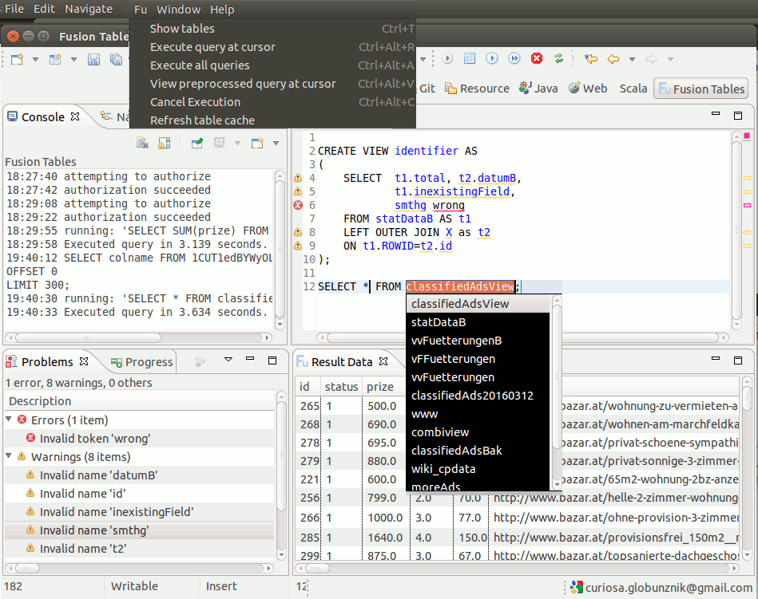
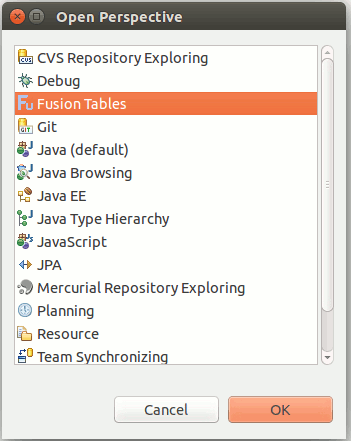

Fusion Tables Console Eclipse Plugin
View on GitHub

Covers
SELECT, CREATE VIEW, INSERT, UPDATE, DELETE, DESCRIBE and SHOW TABLES.Table ID substitution
For tables owned by yourself you can use table names instead of table IDs. Make sure, there are no naming collisions. A fusion tables query actually looks like SELECT * FROM 1echZ_63RosRjW43qItffBErXayC9VXFiB6quHXA6. Instead you can use the table name for tables you own like in SELECT * FROM Customer. View the actual query issued with menu item Fu -> View preprocessed query at cursor. Make sure, that table names are unique and there is no naming collision.Extended Sql statments
The client accepts some usual Sql terms not covered by Fusion Tables Sql and translates them to api calls. Fusion tables sql limits DELETE and UPDATE statements to single ROWIDs like in DELETE FROM Emp WHERE ROWID = 11038, alternatively in case of DELETE one may omit the WHERE clause altogether. For them the client accepts the same <filter_condition> in the WHERE clause as SELECT ({ WHERE <filter_condition> | <spatial_condition> { AND <filter_condition> }* }).So you can use e.g. DELETE FROM Emp WHERE Salary > 11038. Such statements get broken down to as sequence of single DELETEs, each one issued separately. Note that such statements are not atomic in their execution and there is no transaction mechanism for them. Cancellation or failure leaves the data partially changed.
Find below the definition for the extended sql syntax.
Get started
Google Setup
You need some fusion tables you own or some external table IDs, a google developers project with activated fusion tables api and an OAuth2 client ID (with application type "other") for the project.Installation
 Either drag & drop the Eclipse marketplace link above to your running Eclipse instance.
Either drag & drop the Eclipse marketplace link above to your running Eclipse instance.Alternatively within Eclipse go to: Help -> Install New Software... and enter the following update site url: http://curiosag.github.io/ftc/ftcUpdateSite
- Select the Fusion Tables Console Plug-in feature to install
- Read the license terms and continue with OK, if you find them acceptable. Never mind, it is the unavoidable EPL.
- You'll be asked about installing unsigned content. Press OK, if it is for you.
- After installation you will be prompted for a restart of Eclipse, which is recommended
Settings
After Eclipse restarted go to Window -> Open perspective -> Other and choose the Fusion Tables perspective to enable the Fu menu entry and the Export Fu Data entry in the File menu. Choose Window -> Preferences -> Fusion Tables Console, enter client id and secret, then press Authenticate. The authentication workflow will try to open your default browser and take you through further steps. If it doesen't show up, you can find the required URL in the log pane, proceed manually in this case. If anything goes wrong with the authentication, the client waits for the defined timeout period and then cancels. In case of success the client stores the credentials and authenticates automatically in future sessions. Once authenticated create a new .sql or .fts file and open it with the Fusion Tables editor. Press ctrl+space in the empty editor window for a list of top level Sql statements. It is somewhat tested on Ubuntu 15, Oracle Java(TM) SE Runtime Environment (build 1.8.0_60-b27), Eclipse Luna and Mars 1+2. Requires Java 7.
Extended command syntax
| Command | Syntax | Comment |
| Rename table | ALTER TABLE [table name or ID] RENAME TO [new name] | Atomic |
| Delete table | DROP TABLE [table name or ID] | Atomic |
| Copy table | CREATE TABLE [table name] AS SELECT * FROM [source table name or ID] | Composite: copy, rename. If rename fails, the name of the new table defaults to "Copy of [original name]" |
| UPDATE | UPDATE TABLE [table name or ID] <filter_condition> | Composite: select ROWIDs for <filter_condition>, 1 update per ROWID. |
| DELETE | DELETE FROM [table name or ID] { <filter_condition> } | Composite: select ROWIDs for <filter_condition>, 1 delete per ROWID. |
Shortcuts
| Ctrl+Alt+R | Execute query under cursor |
| Ctrl+Alt+A | Execute all queries sequentially |
| Ctrl+Alt+C | Cancel query execution |
| Ctrl+Alt+V | View preprocessed query |
| Ctrl+T | Show tables |
Limitations
Details about certain limitations of the client and the fusion tables service itself you can find with the description of the standalone client.Known issues
Under certain circumstances with GTK under Linux there's a segmentation fault when Eclipse tries to access the desktop, which is precisely what the authentication workflow does. If that happens to you, please refer to the straight forward workaround in the bug description. It cleared the problem for me with Mars 2, with Luna it didn't happen in the first place.Credits
Silk icon set by Mark James.Google Fusion Tables™ service is a trademark of Google Inc.